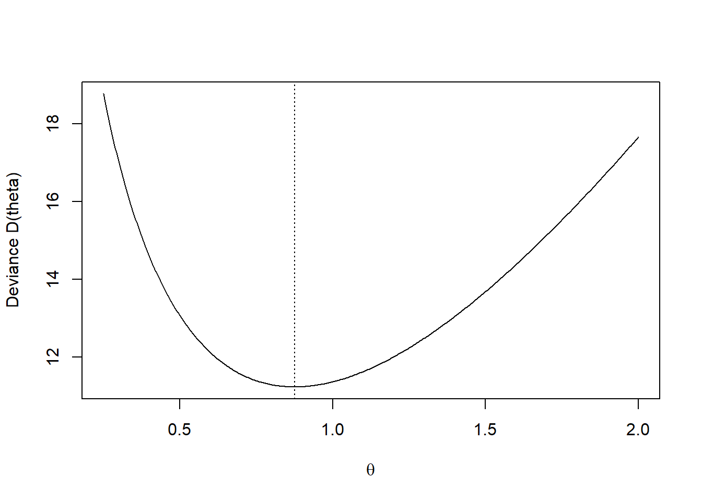

y <- c(2, 0, 0, 1, 0, 1, 3, 0)
n <- length(y)
theta_hat <- mean(y)
deviance <- function(theta) {
2 * sum(ifelse(y == 0,
theta,
y * log(y / theta) - (y - theta)))
}
theta_grid <- seq(0.25, 2, length.out = 500)
D_vals <- sapply(theta_grid, deviance)
plot(theta_grid, D_vals, type = "l",
xlab = expression(theta),
ylab = "Deviance D(theta)")
abline(h = qchisq(0.95, df = 1), lty = 2)
abline(v = theta_hat, lty = 3)
CI <- range(theta_grid[D_vals <= qchisq(0.95, df = 1)])Warning in min(x): kein nicht-fehlendes Argument für min; gebe Inf zurückWarning in max(x): kein nicht-fehlendes Argument für max; gebe -Inf zurückCI[1] Inf -Inf